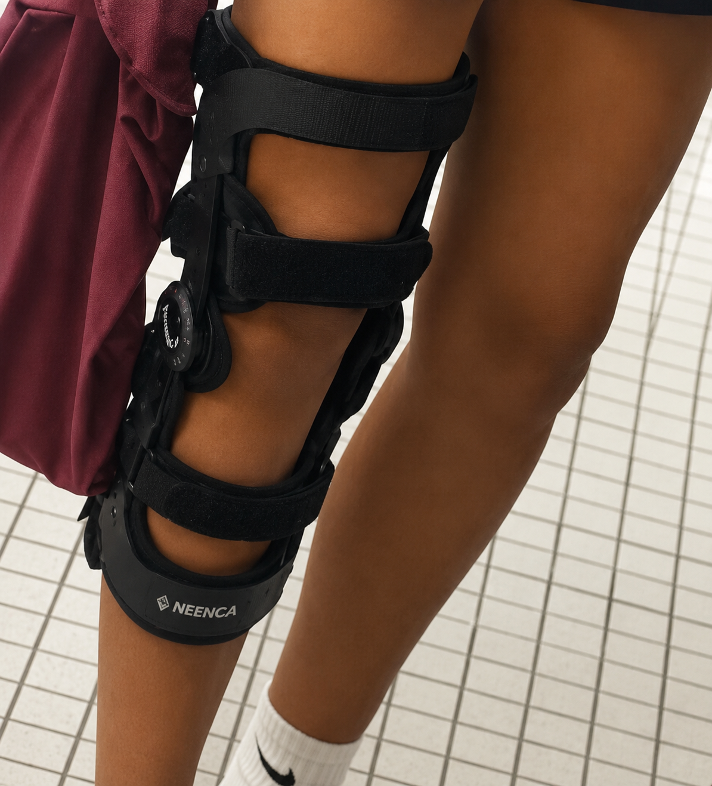
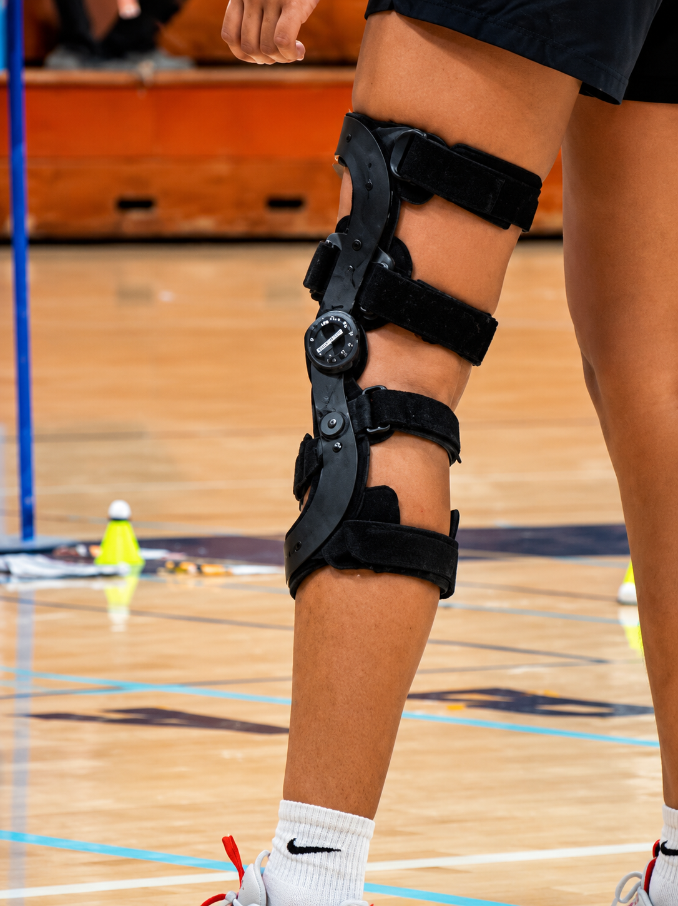

Choosing to Keep Playing
Summary: After being diagnosed with a complete Grade 3 ACL tear, my doctors recommended surgery as soon as possible. Instead, I made the difficult decision to postpone surgery so I could finish my freshman badminton season.
Through dedicated pre-hab, careful decision-making, and wearing a functional ACL sports brace, I gradually rebuilt both my strength and confidence while balancing my love for badminton with the risks of playing on an unstable knee.
Losing Confidence
My first badminton open gym after receiving my diagnosis completely changed my perspective.
Before stepping back onto the court, I thought there was still a chance I could continue playing normally. Instead, I immediately realized how much trust I had lost in my knee.
Every quick movement made me hesitate. My knee often felt loose, and I constantly worried that it would give out. Even my coach noticed how cautious I had become and suggested that sitting out the season would probably be the safest option.
Although I understood why everyone was telling me not to play, I wasn't ready to accept that my freshman season was already over.
One of the hardest parts wasn't the pain—it was no longer trusting my own body. Before the injury, every movement happened naturally. Now, every lunge, jump, and change of direction came with hesitation.
Turning Rehabilitation Into Confidence
That first open gym completely changed my mindset.
Instead of wondering whether I could play, my focus shifted toward earning back the confidence I had lost in my knee.
Every physical therapy appointment and every workout at home now had a purpose. I wasn't simply trying to make my knee stronger—I was trying to trust it again.
Every week I noticed small improvements in my movement, balance, and stability, and those improvements slowly carried over onto the badminton court.
By the time I returned for my next open gym, I realized I wasn't just physically improving. For the first time since my injury, I truly believed that returning to competition might actually be possible.
Braces I Tried
The temporary online brace compared with the clinic brace I trusted during practices and games.

Amazon Knee Brace
While waiting for my more advanced clinic brace to arrive, I bought this cheaper Amazon brace as a temporary option.
It was uncomfortable, extremely bulky, and did not fit well. Even though it provided some compression, it gave me very little stability and did not make me feel confident enough for fast badminton movement.
- Affordable
- Easy to order
- Basic compression
- Poor fit
- Very little stability
- Uncomfortable
- Very bulky
Functional ACL Sports Brace
The two photos below show the same clinic-provided ACL sports brace from different angles. This was the brace I consistently wore during every badminton practice and game.
It was much more stable than the Amazon brace and gave me significantly more confidence in my knee. The rigid hinges and straps helped restrict risky movement while still allowing me to play.
The main downside was that the side of the brace could pinch the outside of my right knee whenever I bent too deeply. Repeated irritation from that pinching eventually left a small scar.
- Much more stable
- Provided by my clinic
- Built confidence during sports
- Used for practices and games
- Bulky
- Could pinch during deep bending
- Left a small irritation scar
- Still required careful movement


The Decision That Changed Everything
About one week before tryouts, I attended another open gym.
This time, everything felt different.
Although my movement was still somewhat limited, I realized how much progress I had made in only a few weeks. My confidence had grown tremendously, and I could finally imagine myself competing again.
That was the day I made one of the biggest decisions of my recovery.
I postponed my ACL reconstruction from March 17th to April 29th so I could finish my freshman badminton season.
It wasn't a decision I made lightly. My doctors, physical therapist, parents, and countless hours of research all reminded me of the risks.
I promised myself that if my knee ever became painful or unstable, I would immediately stop playing. Every practice and match became a balance between pursuing something I loved and protecting my long-term health.
Learning to Trust My Knee Again
While waiting for my clinic ACL sports brace, I continued practicing with temporary braces and supportive knee sleeves.
Every practice felt slightly better than the last.
Instead of focusing on everything I could no longer do, I began adapting my game. I learned to move more efficiently, avoid unnecessary risks, and rely on smarter positioning instead of explosive movement.
As my confidence continued to grow, I slowly stopped thinking about my knee during every rally. Instead of questioning every movement, I started focusing on badminton again.
That was when I realized I wasn't just recovering physically—I was rebuilding my confidence as an athlete.
Tournament Season
About a month into the season, we competed in our first tournament. It was a doubles tournament where I played two events. Although I didn't place, I walked away feeling incredibly proud.
For the first time since tearing my ACL, I realized my knee was capable of handling the pressure of competitive matches.
The next tournament completely changed my confidence. It was a singles-only tournament—a format I had convinced myself would be impossible after my injury because of the constant movement and court coverage it requires.
I entered with very low expectations. To my surprise, I fought through every match and finished First Place, defeating one of my own teammates in the championship match.
That tournament became a turning point. It was the first time since tearing my ACL that badminton felt normal again.
The Best Freshman Season I Could Have Asked For
As the season continued, my confidence kept growing. I became my school's number one ranked singles player and was frequently recognized by players and coaches from other schools.
Although I ultimately decided not to compete in CIF to protect my knee before surgery, I have never regretted that decision. Protecting my long-term recovery was more important than one final tournament.
Looking Back
Looking back, I learned that recovering from an injury isn't just about healing physically. It is about adapting, staying patient, and continuing to move forward even when progress feels slow.
Even after coming home late from practices and tournaments, I still completed my rehabilitation exercises before going to bed.
I truly believe that staying consistent with recovery, wearing my brace every time I stepped onto the court, and listening to my body played a huge role in allowing me to finish the season.
This experience taught me discipline, patience, and the importance of trusting the process even when results aren't immediate.
“I wasn't only rebuilding my knee—I was rebuilding my confidence as an athlete.”